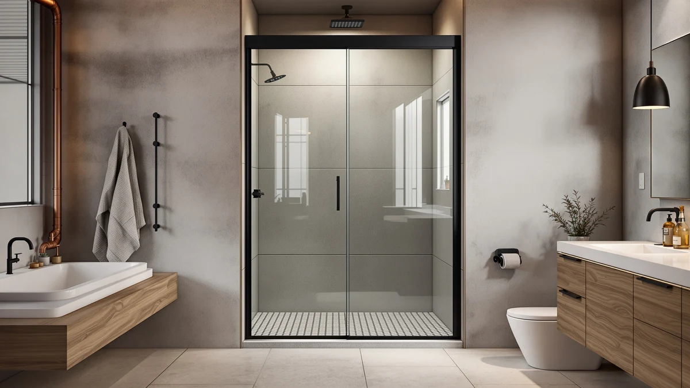

Best Shower Door Installers Near Me (2026)
Prices and picks verified as of October 2026. Independent, reader-supported reviews.


Quick Answer
If you went looking for the best shower door installers near me, the cheaper fix is often a door you can mount yourself. We compared seven frameless and semi-frameless sliding doors on glass thickness, hardware and verified owner reviews, and the Aurisal Frameless Stainless Steel Sliding Shower Door in matte black is the strongest all-around pick at $389.99. A local pro still makes sense for an out-of-square opening or a full tub conversion, and we cover what that typically costs below.
Our pick: Frameless Stainless Steel Sliding Shower, $389.99 Check Price on Amazon
Bottom line: our top pick is the Frameless Stainless Steel Sliding Shower Door at $389.99. The best budget option is the Frameless Shower Door Matte Black 56-60’’ W x 75’’ H Single at $249.30.
Things to Know Before You Buy
- Hiring an installer isn't always the cheapest option. People searching for shower door installers near me are often surprised that labor alone runs $150 to $400, on top of the door, which is why a lot of these buyers end up installing the door themselves instead.
- Glass thickness sets the feel and the price. Most doors here use 1/4 inch (6mm) tempered glass, while the BoBliss steps up to 5/16 inch (8mm) for a more rigid, premium feel. Thicker glass is heavier, so plan for a two-person lift.
- These doors fit a width range, not one fixed size. Ranges like 56 to 60 inches cover most standard alcoves and install reversibly on either side, but measure your opening at the top, middle and bottom before you order.
- The base isn't included. Every pick here is a glass-and-hardware kit. You supply the shower pan, base or tiled curb underneath.
- Finish affects upkeep as well as looks. Matte black shows hard-water spots and fingerprints more readily than brushed nickel or stainless, so factor in a quick wipe-down after each shower.
Searching for the best shower door installers near me usually means one of two things: you want a local pro to hang a new door, or you are hoping to skip the install quote altogether. A labor-only quote for a standard sliding door typically lands between $150 and $400, and that number climbs fast if your opening needs reframing or you are converting a tub into a walk-in shower. Before you book anyone, know which doors are built for an easy install and which ones justify the call to a pro.
We researched seven frameless and semi-frameless sliding shower doors sold on Amazon, comparing published specs like glass thickness, width range and hardware finish against patterns in verified owner reviews. The Aurisal Frameless Stainless Steel Sliding Shower Door in matte black comes out on top for most standard alcoves, pairing rust-proof dual tracks with 1/4 inch tempered glass at a price that still leaves room in the budget if you do decide to hire help for the trickiest part of the job.
Not every bathroom fits the same answer, though. We also cover a brushed nickel version of that same door for anyone who wants to match existing fixtures, a thicker-glass option for a more premium feel, a tall 76-inch slider, a true budget pick, and a cut-to-fit option built for tub-to-shower conversions. Whichever route you take, local or DIY, the door itself is the one line item you do not want to get wrong.
Why You Should Trust Us
Best Shower Doors is run by Ilane Tall, who has spent years covering bathroom fixtures and remodeling for a US audience. We do not run a fake testing lab and we do not invent star ratings. We are not shower door installers near you, and we are upfront about that: what we do is read the actual spec sheets, cross-check glass thickness and dimensions against manufacturer listings, and work through verified owner reviews to see what holds up after installation. When a door has a real weakness, we say so. Every Amazon link here is affiliate-tagged, which supports the site at no extra cost to you and never changes which product we recommend.
How We Picked
We started with frameless and semi-frameless sliding doors that are in stock and shipping in the US, then filtered on what separates an easy DIY install from a job you should hand to local shower door installers near you. Glass thickness came first, and we gave extra credit to doors at 5/16 inch (8mm) over the more common 1/4 inch (6mm). We looked closely at the adjustable width range, since a door spanning 56 to 60 inches fits far more alcoves than a fixed size, and we favored reversible installs and hardware finishes that would not look out of place next to existing fixtures. Finally, we made sure the lineup covered real budgets and layouts: a value pick, a tall 76-inch slider, a thicker-glass upgrade, and a cut-to-fit option for tub conversions.
How We Compared
We are transparent about method here: we did not hire a crew of shower door installers near us to mount all seven doors side by side. Instead we compared each door on published, verifiable specs, glass thickness, width range, weight and hardware finish, and on the patterns that repeat across dozens of verified purchase reviews. The signals we weighed are consistent across the category: does the glass feel rigid or flimsy once hung, does the roller stay smooth after months of use, and does the door stay aligned once the tracks are set. Where owners repeatedly flagged the same issue, like a seal strip that needs replacing or a track that needs re-leveling, we called it out in that product's flaws instead of burying it in the fine print.
Our Picks

Frameless Stainless Steel Sliding Shower
What we like
- Rust-proof dual-track hardware holds alignment without the wobble some single-track doors develop
- 1/4" (6mm) tempered glass feels solid for the price
- 56-60" adjustable width fits the vast majority of standard alcoves
- Reversible install works for a left- or right-hand opening
Flaws but not dealbreakers
- At 72" tall it runs shorter than the 75-76" doors here, so check it against a taller opening first
- Matte black shows hard-water spots and fingerprints more than a lighter finish
| Material | — |
| Size | 60"*72"-1/4" |
The Aurisal is our top pick because it covers the basics that matter most on a frameless slider without charging a premium for them. The dual-track hardware is rust-proof, which matters in a space that is wet every single day, and the 1/4" tempered glass has enough heft that it does not flex or rattle when you slide it. At $389.99 it sits comfortably between the budget options and the pricier 76-inch doors, which is exactly the range most people searching for shower door installers near me are trying to land in once they factor in labor.
The honest trade-off is height. At 72 inches tall, it is a few inches shorter than some of the other doors here, so measure your opening before you order if your shower walls run tall. Matte black also needs a quick wipe-down after use to keep hard-water spots from building up. Neither issue is a dealbreaker, and for a standard 56-60 inch alcove this is the door we would install first.

KPUY Frameless Shower Door 55-60"
What we like
- Full 76" height closes more of the gap above the door than shorter sliders, which keeps steam in
- Explosion-proof film coating adds a layer of protection if the tempered glass ever fails
- Brushed nickel hardware matches faucets and fixtures better than chrome or matte black
- 55-60" adjustable width fits standard alcoves with room to spare
Flaws but not dealbreakers
- At roughly $500 it is the most expensive door in this lineup, so you are paying for the height and finish
- The taller, heavier glass means a careful two-person install, not a solo job
| Material | — |
| Size | 55-60" W x 76" H |
The KPUY is the pick for anyone whose shower opening runs tall or who wants the more enclosed, spa-like feel that a full 76-inch glass wall gives. Shorter doors leave open air above them; this one closes most of that gap, which keeps heat and steam where you want it. The explosion-proof film coating and brushed nickel stainless hardware also give it a more finished look than the matte black options here, which matters if your other fixtures are already nickel or chrome.
At about $500, it costs more than hiring shower door installers near you for labor alone on a cheaper door, so it only makes sense if the height and finish are things you want. The same caution applies as with any tall frameless door: a 76-inch panel of tempered glass is heavy, so line up a second set of hands before you start. For taller openings or a nickel-matched bathroom, it earns the premium.

ENSO SENKA 56-60" W x
What we like
- Treated glass coating is designed to resist water spots and soap scum buildup between cleanings
- Semi-frameless bypass design is more budget-friendly than a true frameless slider
- 56-60" adjustable width fits standard alcoves
- Matte black finish pairs well with modern tile and fixtures
Flaws but not dealbreakers
- The bypass track frame is more visible than a true frameless edge, so it reads less premium up close
- Owners report the treated coating helps but does not eliminate the need for occasional wiping
| Material | — |
| Size | 60" W X 72" H |
The ENSO SENKA leans into the one thing most shower door owners complain about: cleaning. The treated tempered glass is built to resist water spots and soap scum between wipe-downs, which matters in a semi-frameless design where the bypass track gives grime a place to collect. At $269.99 it undercuts the fully frameless options here while still delivering tempered safety glass and a 56-60 inch width range that fits most standard alcoves.
The trade-off is look rather than function. The semi-frameless bypass track is more visible than a true frameless edge, so it will not pass for a custom glass enclosure. If your priority is spending less time cleaning the glass and less money overall, rather than chasing the most minimal look, this is a reasonable door to install yourself over a weekend.

Frameless Shower Door Matte Black
What we like
- Marketed specifically as cut-to-fit for bathroom remodels and tub-to-shower conversions
- Lowest price in this lineup at $249.30 while still using tempered safety glass
- 56-60" adjustable single bypass design fits standard alcoves
- Matte black hardware gives a modern look without paying a premium for it
Flaws but not dealbreakers
- 75" height is on the shorter side if your tub-to-shower conversion has a tall opening
- As the most affordable pick, the glass and hardware feel noticeably lighter-duty than the pricier doors here
| Material | — |
| Size | 60" W x 75" H Single Sliding |
If you are converting a tub into a walk-in shower, this door is built for exactly that job. It is sold as a cut-to-fit single bypass door for bathroom remodels, and at $249.30 it is the most affordable way to get a genuinely frameless-looking matte black door into that kind of project. The 56-60 inch adjustable width covers most tub openings without custom ordering.
The compromise is in the details rather than the core function: the glass and hardware feel lighter-duty than the $400-plus doors in this guide, and the 75-inch height is worth double-checking against a taller opening before you buy. For a straightforward conversion on a tight budget, though, it does the job without requiring a custom quote from local shower door installers.

GETPRO Shower Door Double Sliding
What we like
- Double sliding panels open from the center, which owners report makes stepping in and out easier than a single bypass
- 57-60" adjustable width fits standard walk-in openings
- 1/4" tempered glass with a matte black finish matches the rest of this lineup
- Priced close to the budget pick while adding the double-sliding mechanism
Flaws but not dealbreakers
- Two sliding panels mean two sets of rollers to keep aligned, which is slightly more hardware to maintain than a single-panel door
- 72" height is on the shorter end if your walk-in opening runs tall
| Material | — |
| Size | 60'' W x 72'' H |
The GETPRO stands out for its double sliding layout: instead of one panel bypassing a fixed pane, both panels slide, which opens a wider path into the shower. For walk-in showers where you are stepping through at an angle rather than straight on, owners report that extra width makes a real difference day to day. At $260.07 it costs barely more than our budget pick while adding that second sliding panel.
The trade-off is a bit more hardware to keep aligned over time, since two rollers need to track smoothly instead of one. The 72-inch height also means checking your opening if it runs on the taller side. For a walk-in layout specifically, though, this is the pick worth considering before you pay for shower door installers near you to custom-fit something pricier.

BoBliss Frameless Sliding Glass Shower
What we like
- 5/16" (8mm) tempered glass is thicker than every other door in this guide except the premium slider
- Stainless steel hardware is built to resist rust in a daily-wet environment
- Full 76" height gives a more enclosed, spa-like feel
- 56-60" adjustable width fits standard alcoves
Flaws but not dealbreakers
- At $429.99 it is one of the pricier doors here, so it is overkill for a rarely used guest bath
- The thicker glass is heavier, so a two-person install is strongly recommended
| Material | — |
| Size | 56-60" W x 76" H |
The BoBliss is the door to pick if glass thickness is your main priority. At 5/16" (8mm), it is noticeably more rigid than the 1/4" glass used on most doors in this guide, and that extra mass is what gives a frameless door its solid, expensive feel when you slide it. Pair that with stainless steel hardware and the full 76-inch height, and it reads closer to a custom glass enclosure than an off-the-shelf kit.
At $429.99, it costs more than our top pick, and the thicker glass means you should not attempt the install solo. If you compared quotes from shower door installers near you and found the labor cost manageable, this is the door we would hand them to hang. For a primary bathroom where you want the glass itself to feel premium, it is worth the extra cost.

Frameless Stainless Steel Sliding Shower
What we like
- Same rust-proof dual-track hardware and 1/4" tempered glass as our top pick, in a brushed nickel finish
- Brushed nickel hides water spots and fingerprints better than matte black
- 56-60" adjustable width fits the vast majority of standard alcoves
- Reversible install works for a left- or right-hand opening
Flaws but not dealbreakers
- Costs about $10 more than the matte black version of the same door
- At 72" tall it is shorter than the 75-76" doors here, so measure a taller opening first
| Material | — |
| Size | 60"*72"-1/4" |
This is the same Aurisal door as our top pick, built around the same rust-proof dual tracks and 1/4" tempered glass, finished in brushed nickel instead of matte black. If your faucet, showerhead and towel bar are already nickel or chrome, this version will blend in rather than clash, and brushed nickel has the added practical benefit of hiding water spots better than a dark finish does.
At $399.99 it runs about $10 more than the matte black version, which is a small price for matching your existing fixtures. Everything else, the 56-60 inch width range, the reversible install and the two-person lift for the glass, carries over unchanged. Choose this one over our top pick purely based on which finish your bathroom already wears.
Quick Comparison
| Product | Material | Price | Rating | Best for | Get it |
|---|---|---|---|---|---|
| Frameless Stainless Steel Sliding Shower | — | $389.99 | 4 | Most standard alcoves wanting an easy matte black install | View on Amazon → |
| KPUY Frameless Shower Door 55-60" | — | $499.96 | 4 | Taller openings wanting brushed nickel hardware | View on Amazon → |
| ENSO SENKA 56-60" W x | — | $269.99 | 4 | Budget buyers who want easy-to-clean glass | View on Amazon → |
| Frameless Shower Door Matte Black | — | $249.30 | 4 | Tub-to-shower conversions on a tight budget | View on Amazon → |
| GETPRO Shower Door Double Sliding | — | $260.07 | 4 | Walk-in showers wanting a double sliding door | View on Amazon → |
| BoBliss Frameless Sliding Glass Shower | — | $429.99 | 4 | Buyers wanting the thickest, most premium glass | View on Amazon → |
| Frameless Stainless Steel Sliding Shower | — | $399.99 | 4 | Matching brushed nickel or chrome fixtures | View on Amazon → |
The Competition
We also looked at several fully custom heavy-glass enclosures that require a professional measurement visit before you can even get a price. Those deliver a beautiful result, but the quote process alone can take longer than installing one of the doors on this list, so they sit outside a buy-it-online roundup aimed at people trying to avoid that exact wait. We passed on a handful of bi-fold and accordion-style doors for a different reason: the extra hinges and seams give water more places to escape, which works against the low-maintenance case for going frameless in the first place.
We also skipped a few ultra-cheap sliders under $200 where owners repeatedly described the glass as flexing or rattling in the track, which is the kind of issue no amount of careful installation fixes. Whether you end up calling shower door installers near you or mounting one of these seven doors yourself, the Aurisal Frameless Stainless Steel Sliding Shower Door remains the one we would point most people to first, with the brushed nickel version standing by for anyone who needs the finish to match.
What these prices have actually done
We check the price of every product on this page every hour and keep the record. These figures are observations, not estimates or forecasts.
- KPUY Frameless Shower Door has ranged from $424.97 to $499.96 across 25 hourly price checks since September 27, 2026. It was $499.96 at the last check.
- ENSO SENKA 56-60" W x 72" H Semi-Frameless Bypass Sliding Shower Door has ranged from $251.99 to $269.99 across 23 hourly price checks since September 27, 2026. It was $251.99 at the last check.
- GETPRO Shower Door Double Sliding 57-60 in. W x 72 in. H has ranged from $260.07 to $273.76 across 22 hourly price checks since September 27, 2026. It was $260.07 at the last check.
- BoBliss Frameless Sliding Glass Shower Door has ranged from $419.99 to $439.99 across 26 hourly price checks since September 27, 2026. It was $429.99 at the last check.
Last updated October 28, 2026. Amazon prices change constantly; the figure you see on Amazon right now is the one that counts.
Frequently Asked Questions
How much do shower door installers near me charge to install a frameless door?
A local installer typically charges between $150 and $400 in labor for a standard frameless or semi-frameless sliding door, on top of the price of the door itself. That range moves higher for custom-order heavy glass or if your existing opening needs to be reframed first. Buying the door yourself and only paying for labor, or installing it yourself, is usually the cheaper route.
Can I install a frameless or semi-frameless shower door myself instead of hiring someone?
Yes, most of the doors in this guide are designed for a capable DIYer with a helper on hand. The glass is heavy and the walls need to be level, but the hardware kits include the brackets, tracks and seals you need. If your opening is out of square or you are converting a tub to a walk-in shower, that is when hiring one of the shower door installers near you starts to make more sense.
What should I measure before buying a sliding shower door?
Measure the width of your opening at the top, middle and bottom, since older alcoves are rarely perfectly square, and measure the height from the shower pan to the top of the opening. Every door here fits an adjustable width range, like 56 to 60 inches, rather than one fixed size, so match your smallest measurement to the door's range with room to spare.